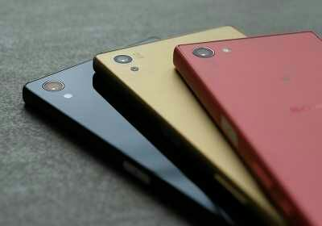

ABOUT PHONES

Mobile Phones
A mobile phone is a portable telephone that can make and receive calls over a radio frequency carrier while the user is moving within a telephone service area.
The radio frequency link establishes a connection to the switching systems of a mobile phone operator, which provides access to the public switched telephone network (PSTN).
Most modern mobile telephone services use a cellular network architecture, and therefore mobile telephones are often also called cellular telephones or cell phones.
In addition to telephony, 2000s-era mobile phones support a variety of other services, such as text messaging, MMS, email, Internet access, short-range wireless communications (infrared, Bluetooth), business applications, gaming, and digital photography.
Mobile phones which offer these and more general computing capabilities are referred to as smartphones.
The first handheld mobile phone was demonstrated by John F. Mitchell and Martin Cooper of Motorola in 1973, using a handset weighing c. 4.4 lbs (2 kg).
In 1983, the DynaTAC 8000x was the first commercially available handheld mobile phone.
From 1983 to 2014, worldwide mobile phone subscriptions grew to over seven billion, penetrating 100% of the global population and reaching even the bottom of the economic pyramid.
In first quarter of 2016, the top smartphone manufacturers were Samsung, Apple and Huawei (and "smartphone sales represented 78 percent of total mobile phone sales")
Features
All mobile phones have a variety of features in common, but manufacturers seek product differentiation by adding functions to attract consumers.
This competition has led to great innovation in mobile phone development over the past 20 years.
The common components found on all phones are:
• A battery, providing the power source for the phone functions.
• An input mechanism to allow the user to interact with the phone. The most common input mechanism is a keypad, but touch screens are also found in most smartphones.
• A screen which echoes the user's typing, displays text messages, contacts and more.
• Basic mobile phone services to allow users to make calls and send text messages.
• All GSM phones use a SIM card to allow an account to be swapped among devices. Some CDMA devices also have a similar card called a R-UIM.
• Individual GSM, WCDMA, iDEN and some satellite phone devices are uniquely identified by an International Mobile Equipment Identity (IMEI) number.
Low-end mobile phones are often referred to as feature phones, and offer basic telephony.
Handsets with more advanced computing ability through the use of native software applications became known as smartphones.
Several phone series have been introduced to address specific market segments, such as the RIM BlackBerry focusing on enterprise/corporate customer email needs, the Sony-Ericsson 'Walkman' series of music/phones and 'Cyber-shot' series of camera/phones, the Nokia Nseries of multimedia phones, the Palm Pre, the HTC Dream and the Apple iPhone.
Click here to go back to the home page